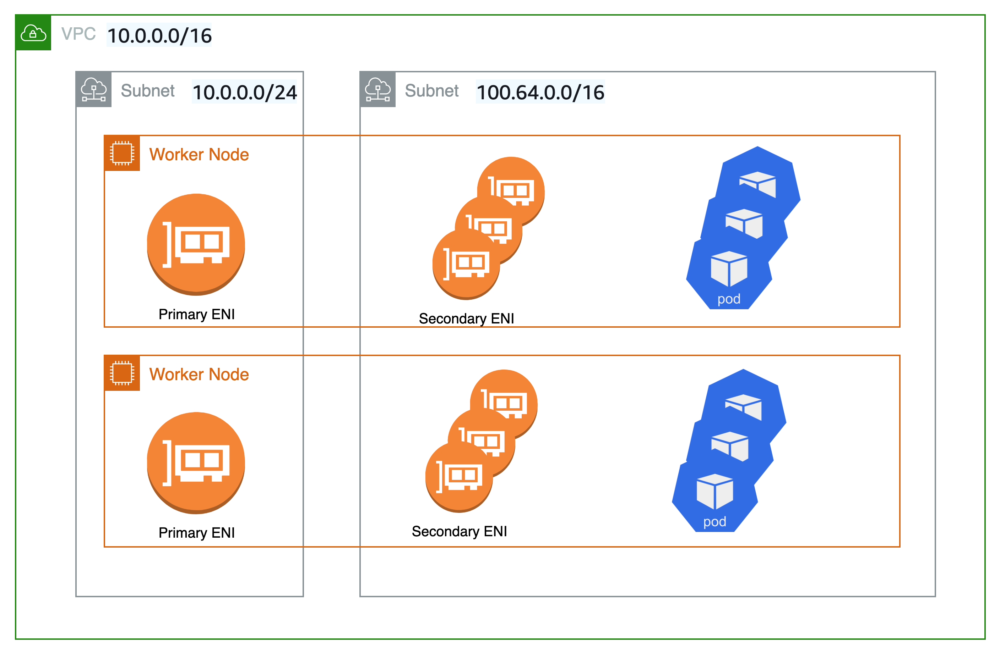

Custom network Karpenter ENI troubleshooting
Karpenter Node가 할당 가능한 IP 개수보다 더 많은 Pod를 Scheduling 하는 문제 해결
6 min read1,204 views
on this pagecontents 8
- EKS로 Kubernetes Cluster 구축하기
- Karpenter로 유연한 Node Autoscaling 하기
- EKS에 Karpenter 설치
- EKS Custom Networking
- Custom network Karpenter ENI troubleshooting
#Pod가 ContainerCreating에서 멈춘다
열심히 Custom Networking을 설정하고 Pod를 모니터링하고 있었는데 이상한 현상이 발생했다. Pod가 ContainerCreating 상태에서 더 이상 다음 단계로 진행되지 않고 멈춰 있던 것이다.
#Failed to assign an IP address to container
Pod Event를 보면 aws-cni가 더 이상 IP를 할당할 수 없다는 오류가 나오고 있었다. Custom Networking으로 Pod IP 여유 공간을 넘치게 설정한 입장에서는 이해할 수 없는 상황이었다.
원인을 찾던 중, 이 현상이 EKS node group의 Node에서는 발생하지 않고 Karpenter가 만든 Node에서만 발생한다는 사실을 알았다.
#Node가 할당 가능한 IP 개수
Karpenter로 뜬 Node는 t4g.medium 인스턴스였다. EC2 스펙에서 인스턴스별 ENI 개수와 ENI당 IP 개수를 확인했다.
#EC2 Network Spec
| instance | ENI | IP / ENI | 기본 | custom networking |
|---|---|---|---|---|
| t4g.medium | 3 | 6 | 17 | 12 |
| t4g.large | 3 | 12 | 35 | 24 |
#Custom Networking에서 줄어드는 IP
Custom Networking을 사용하는 순간, 사용 가능한 IP 계산식이 바뀐다. ENI 1개를 제외한 나머지 ENI의 IP만 Pod에 쓸 수 있다.
# 기본 (custom networking 미사용)(ENI count) × (IP per ENI) − 1 # custom networking 사용(ENI count − 1) × (IP per ENI)Node는 10.0.0.0/24 대역을, Pod는 100.64.0.0/16 대역을 쓰기 때문이다. ENI는 자신이 속한 Subnet 대역의 IP만 할당할 수 있으므로, Node용 ENI 하나는 Pod에 쓸 수 없다.

#Karpenter는 이 사실을 모른다
Node group의 Node는 vpc-cni addon과 EKS가 할당 가능한 IP를 알고 있어서 그 이상 Pod를 스케줄링하지 않는다. 하지만 Karpenter Node는 Karpenter가 직접 관리하기 때문에, 줄어든 IP 개수를 모른 채 기존 계산대로 Pod를 배치한다.
#ReservedENIs 설정
Karpenter 공식 문서에 이미 해법이 있다. ENI 1개를 예약된 ENI로 등록해 Pod 계산에서 빼면 된다.
# karpenter values.yamlsettings: clusterName: ${EKS_CLUSTER_NAME} interruptionQueue: Karpenter-${EKS_CLUSTER_NAME}-SpotInterruptionQueue reservedENIs: "1" # custom networking이 ENI 1개를 점유#Fixed
$ kubectl drain ip-10-0-12-34.ap-northeast-2.compute.internal --ignore-daemonsets --delete-emptydir-data$ kubectl delete node ip-10-0-12-34.ap-northeast-2.compute.internal새로 뜬 Node는 reservedENIs를 반영해 Pod를 12개까지만 받았고, 부족한 만큼 Karpenter가 Node를 추가로 띄웠다.